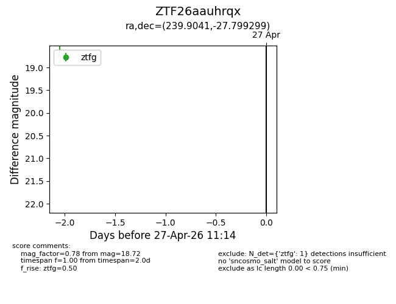
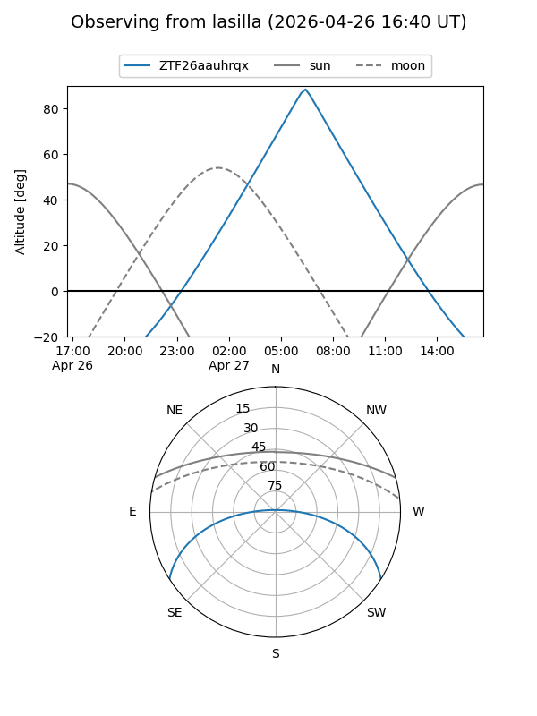
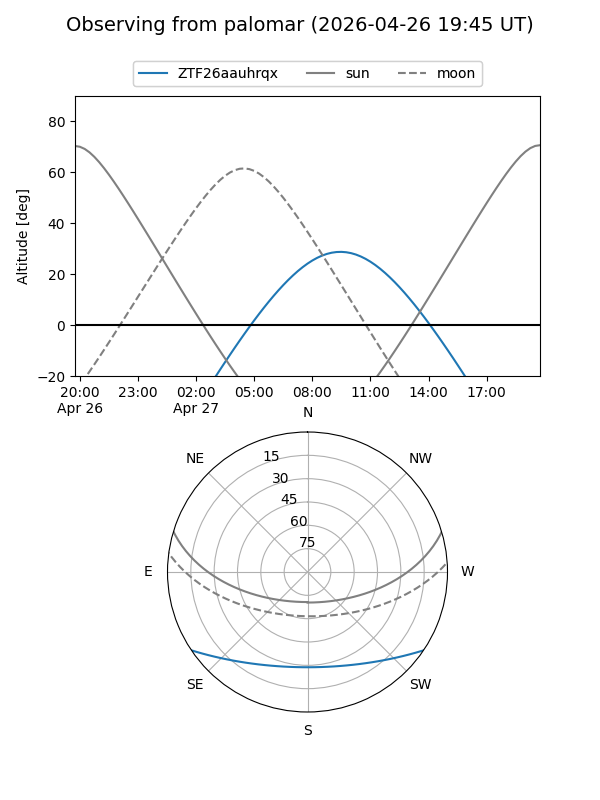

ZTF26aauhrqx
Target ZTF26aauhrqx at 2026-04-27 11:15
Aliases and brokers:
FINK: link
Lasair: link
ALeRCE: link
alt names
ZTF26aauhrqx (ztf,fink_ztf)
Coordinates:
equatorial (ra, dec) = 239.9041,-27.79930
equatorial (HMS+DMS) = 15:59:36.98,-27:47:57.48
galactic (l, b) = (346.1112,+18.89347)
Flags:
Photometry:
last ztfg=18.72
1 ztfg detections
Lightcurve

Visibility


Additional plots